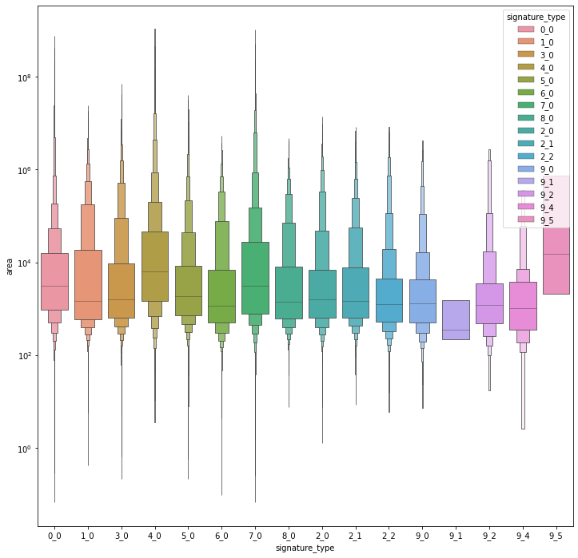
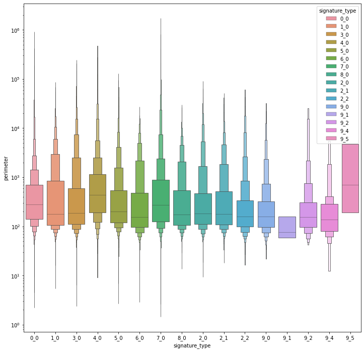
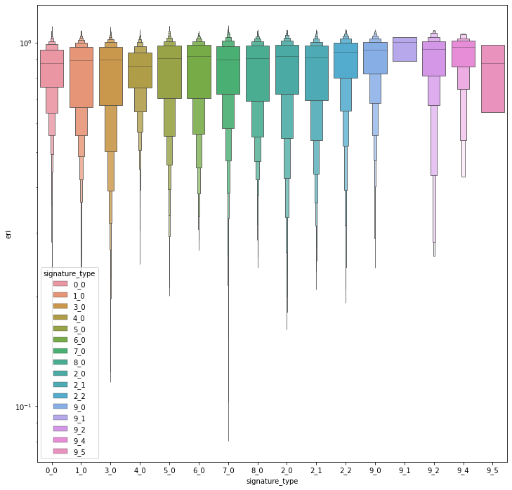
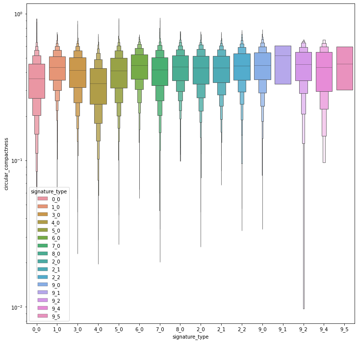
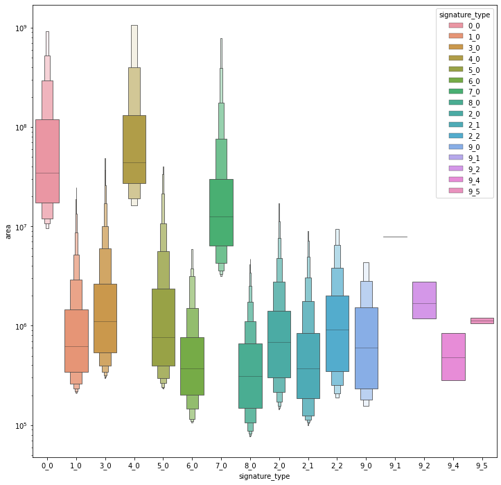

Size and shape of signatures¶
import geopandas
import pandas
import dask_geopandas
import momepy
import seaborn
import pygeos
import pandas
import numpy
from dask.distributed import Client, LocalCluster
import matplotlib.pyplot as plt
client = Client(LocalCluster(n_workers=16))
client
Client
|
Cluster
|
pygeos.__version__
'0.9'
signatures = dask_geopandas.from_geopandas(geopandas.read_parquet("../../urbangrammar_samba/spatial_signatures/signatures/signatures_combined_levels_orig.pq"), npartitions=32)
signatures
Dask-GeoPandas GeoDataFrame Structure:
| kmeans10gb | geometry | level2 | signature_type | |
|---|---|---|---|---|
| npartitions=32 | ||||
| 0 | int64 | geometry | float64 | object |
| 3022 | ... | ... | ... | ... |
| ... | ... | ... | ... | ... |
| 93682 | ... | ... | ... | ... |
| 96703 | ... | ... | ... | ... |
Dask Name: from_pandas, 32 tasks
signatures["area"] = signatures.area
signatures["perimeter"] = signatures.length
signatures["eri"] = signatures.map_partitions(lambda p: momepy.EquivalentRectangularIndex(p).series, meta=pandas.Series(dtype="float"))
signatures["circular_compactness"] = signatures.map_partitions(lambda p: momepy.CircularCompactness(p).series, meta=pandas.Series(dtype="float"))
signatures["donut_index"] = signatures.map_partitions(lambda p: momepy.CourtyardIndex(p, momepy.CourtyardArea(p).series).series, meta=pandas.Series(dtype="float"))
signatures["fractality"] = signatures.map_partitions(lambda p: momepy.FractalDimension(p).series, meta=pandas.Series(dtype="float"))
signatures["convexity"] = signatures.map_partitions(lambda p: momepy.Convexity(p).series, meta=pandas.Series(dtype="float"))
%%time
signatures = signatures.compute()
CPU times: user 12.8 s, sys: 5.15 s, total: 17.9 s
Wall time: 32.1 s
signatures.drop(columns=["kmeans10gb", "geometry", "level2"]).to_parquet("../../urbangrammar_samba/spatial_signatures/esda/sizeshape.pq")
<ipython-input-15-9c695be00e9b>:1: UserWarning: this is an initial implementation of Parquet/Feather file support and associated metadata. This is tracking version 0.1.0 of the metadata specification at https://github.com/geopandas/geo-arrow-spec
This metadata specification does not yet make stability promises. We do not yet recommend using this in a production setting unless you are able to rewrite your Parquet/Feather files.
To further ignore this warning, you can do:
import warnings; warnings.filterwarnings('ignore', message='.*initial implementation of Parquet.*')
signatures.drop(columns=["kmeans10gb", "geometry", "level2"]).to_parquet("../../urbangrammar_samba/spatial_signatures/esda/sizeshape.pq")
signatures.drop(columns=["kmeans10gb", "geometry", "level2"]).to_csv("../../urbangrammar_samba/spatial_signatures/esda/sizeshape.csv")
signatures
| kmeans10gb | geometry | level2 | signature_type | area | perimeter | eri | circular_compactness | donut_index | fractality | convexity | |
|---|---|---|---|---|---|---|---|---|---|---|---|
| 0 | 0 | POLYGON Z ((62220.000 798500.000 0.000, 62110.... | 0.0 | 0_0 | 1.826984e+07 | 29577.575163 | 0.601828 | 0.439852 | 0.000071 | 1.065559 | 0.788857 |
| 1 | 0 | POLYGON Z ((63507.682 796515.169 0.000, 63471.... | 0.0 | 0_0 | 1.235908e+04 | 555.207264 | 0.892662 | 0.254347 | 0.000000 | 1.047118 | 0.983245 |
| 2 | 0 | POLYGON Z ((65953.174 802246.172 0.000, 65950.... | 0.0 | 0_0 | 7.234542e+05 | 5746.792461 | 0.602136 | 0.339522 | 0.000000 | 1.077707 | 0.629428 |
| 3 | 0 | POLYGON Z ((67297.740 803435.800 0.000, 67220.... | 0.0 | 0_0 | 1.229467e+06 | 6161.670240 | 0.731125 | 0.306803 | 0.000000 | 1.046892 | 0.799648 |
| 4 | 0 | POLYGON Z ((75760.000 852670.000 0.000, 75700.... | 0.0 | 0_0 | 7.604014e+06 | 22500.262066 | 0.539593 | 0.252670 | 0.000281 | 1.089988 | 0.641429 |
| ... | ... | ... | ... | ... | ... | ... | ... | ... | ... | ... | ... |
| 96699 | 9 | POLYGON ((323321.005 463795.416, 323319.842 46... | 8.0 | 9_8 | 4.070783e+04 | 824.963123 | 1.020075 | 0.453320 | 0.000000 | 1.004137 | 0.999224 |
| 96700 | 9 | POLYGON ((325929.840 1008792.061, 325927.377 1... | 8.0 | 9_8 | 3.523702e+03 | 270.956057 | 0.959089 | 0.334764 | 0.000000 | 1.032331 | 0.995177 |
| 96701 | 9 | POLYGON ((337804.770 1013422.583, 337800.122 1... | 8.0 | 9_8 | 1.236944e+05 | 1525.262336 | 1.017609 | 0.370246 | 0.000000 | 1.013789 | 0.965269 |
| 96702 | 9 | POLYGON ((422304.270 1147826.990, 422296.000 1... | 8.0 | 9_8 | 1.526104e+03 | 189.735084 | 0.954954 | 0.277671 | 0.000000 | 1.052956 | 0.921173 |
| 96703 | 9 | POLYGON ((525396.260 439215.480, 525360.920 43... | 8.0 | 9_8 | 1.444304e+04 | 477.377607 | 1.026855 | 0.615717 | 0.000000 | 0.998544 | 0.999986 |
96704 rows × 11 columns
outliers = ["9_8", "9_3", "9_6", "9_7"]
signatures = signatures[~signatures.signature_type.isin(outliers)]
fig, ax = plt.subplots(figsize=(12, 12))
seaborn.boxenplot(x="signature_type", y='area', hue='signature_type', dodge=False, data=signatures, ax=ax, showfliers=False, linewidth=.75)
ax.set_yscale("log")

fig, ax = plt.subplots(figsize=(12, 12))
seaborn.boxenplot(x="signature_type", y='perimeter', hue='signature_type', dodge=False, data=signatures, ax=ax, showfliers=False, linewidth=.75)
ax.set_yscale("log")

fig, ax = plt.subplots(figsize=(12, 12))
seaborn.boxenplot(x="signature_type", y='eri', hue='signature_type', dodge=False, data=signatures, ax=ax, showfliers=False, linewidth=.75)
ax.set_yscale("log")

fig, ax = plt.subplots(figsize=(12, 12))
seaborn.boxenplot(x="signature_type", y='circular_compactness', hue='signature_type', dodge=False, data=signatures, ax=ax, showfliers=False, linewidth=.75)
ax.set_yscale("log")

fig, ax = plt.subplots(figsize=(12, 12))
seaborn.boxenplot(x="signature_type", y='donut_index', hue='signature_type', dodge=False, data=signatures, ax=ax, showfliers=False, linewidth=.75)
# ax.set_yscale("log")
<AxesSubplot:xlabel='signature_type', ylabel='donut_index'>
fig, ax = plt.subplots(figsize=(12, 12))
seaborn.boxenplot(x="signature_type", y='fractality', hue='signature_type', dodge=False, data=signatures, ax=ax, showfliers=False, linewidth=.75)
# ax.set_yscale("log")
<AxesSubplot:xlabel='signature_type', ylabel='fractality'>
fig, ax = plt.subplots(figsize=(12, 12))
seaborn.boxenplot(x="signature_type", y='convexity', hue='signature_type', dodge=False, data=signatures, ax=ax, showfliers=False, linewidth=.75)
# ax.set_yscale("log")
<AxesSubplot:xlabel='signature_type', ylabel='convexity'>
signatures.groupby('signature_type').mean().donut_index.plot.bar()
<AxesSubplot:xlabel='signature_type'>
mask = pandas.Series(numpy.zeros(len(signatures), dtype=bool), index=signatures.index)
mask
0 False
1 False
2 False
3 False
4 False
...
96687 False
96688 False
96689 False
96690 False
96691 False
Length: 96689, dtype: bool
for cl in signatures.signature_type.unique():
sub = signatures[signatures.signature_type == cl]
mean = sub.area.mean()
above = sub.area > mean
mask[above[above].index] = True
mask.sum()
6915
significant = signatures[mask]
fig, ax = plt.subplots(figsize=(12, 12))
seaborn.boxenplot(x="signature_type", y='area', hue='signature_type', dodge=False, data=significant, ax=ax, showfliers=False, linewidth=.75)
ax.set_yscale("log")

fig, ax = plt.subplots(figsize=(12, 12))
seaborn.boxenplot(x="signature_type", y='eri', hue='signature_type', dodge=False, data=significant, ax=ax, showfliers=False, linewidth=.75)
# ax.set_yscale("log")
<AxesSubplot:xlabel='signature_type', ylabel='eri'>
fig, ax = plt.subplots(figsize=(12, 12))
seaborn.boxenplot(x="signature_type", y='circular_compactness', hue='signature_type', dodge=False, data=significant, ax=ax, showfliers=False, linewidth=.75)
# ax.set_yscale("log")
<AxesSubplot:xlabel='signature_type', ylabel='circular_compactness'>

fig, ax = plt.subplots(figsize=(12, 12))
seaborn.boxenplot(x="signature_type", y='donut_index', hue='signature_type', dodge=False, data=significant, ax=ax, showfliers=False, linewidth=.75)
# ax.set_yscale("log")
<AxesSubplot:xlabel='signature_type', ylabel='donut_index'>

fig, ax = plt.subplots(figsize=(12, 12))
seaborn.boxenplot(x="signature_type", y='convexity', hue='signature_type', dodge=False, data=significant, ax=ax, showfliers=False, linewidth=.75)
# ax.set_yscale("log")
<AxesSubplot:xlabel='signature_type', ylabel='convexity'>